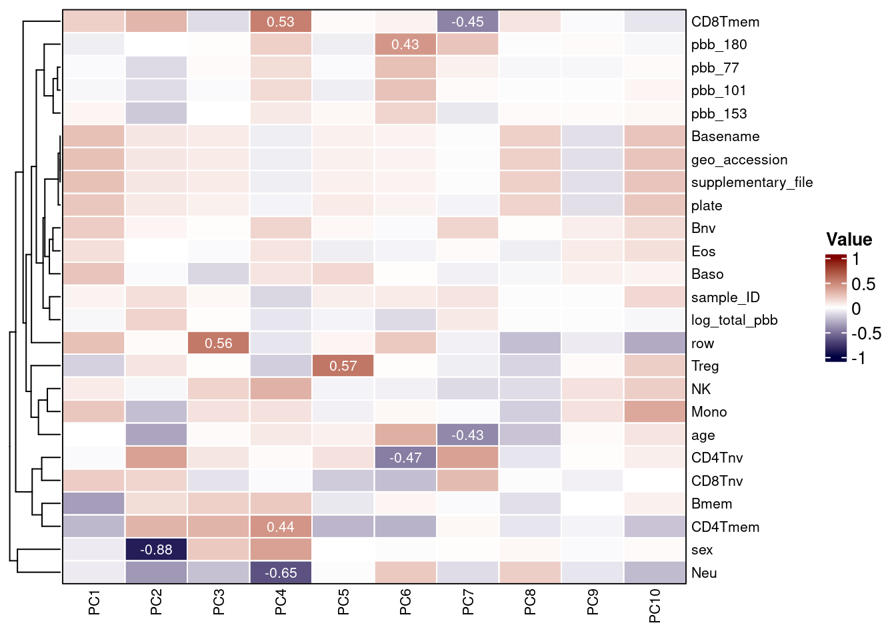

Each column in the RGset colData should be considered as
a potential covariate in EWAS models. Both technical and biological
factors should be investigated as these may introduce batch effects or
be clinically relevant. In order to assess this, you can visualize
correlations with PCs as done previously in this workflow.
Any constant variables are removed from the heatmap, as they will not explain variance in the data.
plot_vars <- apply(targets, 2, function(x) sd(as.numeric(factor(x)), na.rm=T))
plot_vars <- names(plot_vars[!plot_vars %in% c(NA, 0)])
plot_vars## [1] "sample_ID" "geo_accession" "sex" "age" "log_total_pbb" "pbb_153"
## [7] "pbb_77" "pbb_101" "pbb_180" "supplementary_file" "plate" "row"
## [13] "Basename" "CD4Tnv" "Baso" "CD4Tmem" "Bmem" "Bnv"
## [19] "Treg" "CD8Tmem" "CD8Tnv" "Eos" "NK" "Neu"
## [25] "Mono"All variables are then converted to numeric and correlations between them and the PCs are calculated.
heatmap_df <- apply(heatmap_df, 2, function(x) as.numeric(factor(x)))
cxy <- round(cor(pca$x, scale(heatmap_df), use="pairwise.complete.obs"),2) A heatmap can then be used to visualize these correlations and uncover measured variables that explain a large proportion of DNAm variance.
col_fun <- colorRamp2(c(-1, 0, 1), c("#000042", "white", "#800000"))
Heatmap(
t(cxy),
col = col_fun,
border = 'grey5',
cluster_columns = FALSE,
show_row_dend = TRUE,
show_column_dend = FALSE,
name = "Value",
row_names_gp = gpar(fontsize = 8),
column_names_gp = gpar(fontsize = 8),
cell_fun = function(j, i, x, y, width, height, fill) {
grid.rect(x, y, width, height,
gp = gpar(col = "white", lwd = 1, fill = NA))
grid.text(ifelse(abs(t(cxy)[i,j]) > 0.4,
sprintf("%.2f", round(t(cxy)[i, j], 2)),
""),
x, y, gp = gpar(fontsize = 8, col = "white"))
}
)
By examining the correlations in the data, we can build our model in a more informed manner. The second PC is highly correlated with sex and, as is usual in EWAS, we intend to include this as a confounder.
Some predicted cell counts appear of substantial importance and we advise also adjusting for these. Model specification should be informed by a combination of prior knowledge and inspection of patterns in the data.
The sva package contains functions for removing batch
effects and other unwanted variation in high-throughput experiments.
Specifically, the sva package contains functions for the identifying and
building surrogate variables for high-dimensional data sets. Surrogate
variables are covariates constructed directly from high-dimensional data
(like DNAm data) that can be used in subsequent analyses to adjust for
unknown, unmodeled, or latent sources of noise.
The sva package can be used to remove artifacts in three ways:
Removing batch effects and using surrogate variables in differential expression analysis have been shown to reduce dependence, stabilize error rate estimates, and improve reproducibility23,26
The full model and null model are specified with and without the
variable of interest respectively. In this case, we adjust for
sex, age, plate,
row, CD4Tnv, Baso,
CD4Tmem, Bmem, Bnv,
Treg, CD8Tmem, CD8Tnv,
Eos, NK, and Mono. Neutrophils
are excluded to avoid collinearity as all predicted cell counts sum to
1.
mod = model.matrix(~log_total_pbb + age + sex + plate + row + CD4Tnv + Baso + CD4Tmem + Bmem + Bnv + Treg + CD8Tmem + CD8Tnv + Eos + NK + Mono, data=targets)
mod0 = model.matrix(~age + sex + plate + row + CD4Tnv + Baso + CD4Tmem + Bmem + Bnv + Treg + CD8Tmem + CD8Tnv + Eos + NK + Mono,data=targets)Since SVA can only be run on complete data, we use methyLImp220
to create a complete matrix of beta values. The main function
methyLImp2 can take a SummarizedExperiment or beta matrix
as input, and requires the array type to be specified (as
450k or EPIC). By default it will overwrite your SummarizedExperiment
object.
methData_imputed <- methyLImp2(
input = methData,
type = "EPIC",
BPPARAM = SnowParam(exportglobals = FALSE),
minibatch_frac = 0.5)
methData_imputed## class: SummarizedExperiment
## dim: 745368 57
## metadata(0):
## assays(1): beta
## rownames(745368): cg09499020 cg16535257 ... cg08423507
## cg24129471
## rowData names(8): cpg chr ... MASK_general probeType
## colnames(57): GSM3228563_200550980002_R02C01
## GSM3228564_200550980002_R03C01 ...
## GSM3228620_200590490021_R07C01
## GSM3228621_200590490021_R08C01
## colData names(25): sample_ID geo_accession ... Neu MonoThis can then be used to estimate the appropriate number of latent factors to calculate.
The latent factors can then be calculated with the sva
function:
## Number of significant surrogate variables is: 4
## Iteration (out of 5 ):1 2 3 4 5These can then be added to targets to include in the
EWAS model.
sv_df <- as.data.frame(svobj$sv)
colnames(sv_df) <- c('SV1', 'SV2', 'SV3', 'SV4')
targets <- cbind(targets, sv_df)Limma27 is a package with excellent documentation that can be useful for smaller samples, due to the optional empirical Bayes step. Other packages that may be of interest for running EWAS include [gee] and cate.
In order to run an EWAS a formula needs to be specified based on the above exploratory analyses and SVA.
formula <- ~log_total_pbb + age + sex + plate + row + CD4Tnv + Baso + CD4Tmem + Bmem + Bnv + Treg + CD8Tmem + CD8Tnv + Eos + NK + Mono + SV1 + SV2 + SV3 + SV4You can then use this formula to create a design matrix.
## (Intercept) log_total_pbb age
## GSM3228563_200550980002_R02C01 1 -2.7535707 31.46
## GSM3228564_200550980002_R03C01 1 -0.3714986 46.72
## GSM3228565_200550980002_R04C01 1 0.1151128 46.36
## GSM3228566_200550980002_R05C01 1 -1.5478726 53.56
## GSM3228567_200550980002_R06C01 1 -0.9896682 56.36
## GSM3228568_200550980002_R07C01 1 -1.7620065 59.00
## sexMale plate200550980010
## GSM3228563_200550980002_R02C01 0 0
## GSM3228564_200550980002_R03C01 1 0
## GSM3228565_200550980002_R04C01 1 0
## GSM3228566_200550980002_R05C01 0 0
## GSM3228567_200550980002_R06C01 0 0
## GSM3228568_200550980002_R07C01 0 0
## plate200550980025
## GSM3228563_200550980002_R02C01 0
## GSM3228564_200550980002_R03C01 0
## GSM3228565_200550980002_R04C01 0
## GSM3228566_200550980002_R05C01 0
## GSM3228567_200550980002_R06C01 0
## GSM3228568_200550980002_R07C01 0
## plate200550980034
## GSM3228563_200550980002_R02C01 0
## GSM3228564_200550980002_R03C01 0
## GSM3228565_200550980002_R04C01 0
## GSM3228566_200550980002_R05C01 0
## GSM3228567_200550980002_R06C01 0
## GSM3228568_200550980002_R07C01 0
## plate200550980035
## GSM3228563_200550980002_R02C01 0
## GSM3228564_200550980002_R03C01 0
## GSM3228565_200550980002_R04C01 0
## GSM3228566_200550980002_R05C01 0
## GSM3228567_200550980002_R06C01 0
## GSM3228568_200550980002_R07C01 0
## plate200590490002
## GSM3228563_200550980002_R02C01 0
## GSM3228564_200550980002_R03C01 0
## GSM3228565_200550980002_R04C01 0
## GSM3228566_200550980002_R05C01 0
## GSM3228567_200550980002_R06C01 0
## GSM3228568_200550980002_R07C01 0
## plate200590490017
## GSM3228563_200550980002_R02C01 0
## GSM3228564_200550980002_R03C01 0
## GSM3228565_200550980002_R04C01 0
## GSM3228566_200550980002_R05C01 0
## GSM3228567_200550980002_R06C01 0
## GSM3228568_200550980002_R07C01 0
## plate200590490021 row CD4Tnv
## GSM3228563_200550980002_R02C01 0 2 0.11902209
## GSM3228564_200550980002_R03C01 0 3 0.05644615
## GSM3228565_200550980002_R04C01 0 4 0.06291340
## GSM3228566_200550980002_R05C01 0 5 0.05244307
## GSM3228567_200550980002_R06C01 0 6 0.02793638
## GSM3228568_200550980002_R07C01 0 7 0.13030900
## Baso CD4Tmem Bmem
## GSM3228563_200550980002_R02C01 0.000000000 0.06856902 0.04338180
## GSM3228564_200550980002_R03C01 0.003842171 0.06457686 0.03217819
## GSM3228565_200550980002_R04C01 0.000000000 0.09916235 0.03492393
## GSM3228566_200550980002_R05C01 0.000000000 0.08978173 0.02768882
## GSM3228567_200550980002_R06C01 0.000000000 0.10858777 0.04420792
## GSM3228568_200550980002_R07C01 0.004389993 0.10208036 0.02889159
## Bnv Treg CD8Tmem
## GSM3228563_200550980002_R02C01 0.000000e+00 0.02987670 0.05170485
## GSM3228564_200550980002_R03C01 3.568496e-02 0.03253447 0.02588011
## GSM3228565_200550980002_R04C01 3.422224e-02 0.02091392 0.01348294
## GSM3228566_200550980002_R05C01 6.798882e-02 0.02574876 0.02891707
## GSM3228567_200550980002_R06C01 1.356557e-02 0.02396820 0.06586532
## GSM3228568_200550980002_R07C01 3.214358e-05 0.04655381 0.01622896
## CD8Tnv Eos NK
## GSM3228563_200550980002_R02C01 0.064097832 0.001164834 0.03424776
## GSM3228564_200550980002_R03C01 0.000000000 0.012923973 0.06050254
## GSM3228565_200550980002_R04C01 0.000000000 0.002714143 0.02687347
## GSM3228566_200550980002_R05C01 0.005514883 0.013811095 0.11331037
## GSM3228567_200550980002_R06C01 0.000000000 0.007773618 0.02981967
## GSM3228568_200550980002_R07C01 0.003487802 0.000000000 0.03244102
## Mono SV1 SV2
## GSM3228563_200550980002_R02C01 0.07986611 -0.08479861 0.11245914
## GSM3228564_200550980002_R03C01 0.17395649 -0.10011645 0.04659800
## GSM3228565_200550980002_R04C01 0.09667953 -0.08706279 0.02731426
## GSM3228566_200550980002_R05C01 0.14498329 -0.07343356 0.17980275
## GSM3228567_200550980002_R06C01 0.07181471 -0.06994447 0.04691520
## GSM3228568_200550980002_R07C01 0.06782257 -0.08167816 0.04962268
## SV3 SV4
## GSM3228563_200550980002_R02C01 -0.056605299 0.11744960
## GSM3228564_200550980002_R03C01 0.131833700 -0.05640994
## GSM3228565_200550980002_R04C01 0.124087644 -0.01504261
## GSM3228566_200550980002_R05C01 0.065412848 0.03247044
## GSM3228567_200550980002_R06C01 0.004589795 0.18848793
## GSM3228568_200550980002_R07C01 0.109370701 -0.34703374Random effects can be included using
duplicateCorrelation and specifying the block
argument. This is useful for paired experiments, not used in this
example, but with example code shown here.
Models are fit using lmFit.
## Warning: Partial NA coefficients for 5 probe(s)Models can also be fit for random effects using the
dupcor object created above.
fit <- lmFit(betas, design,
block = colData(methData)$ID,
correlation = dupcor$consensus.correlation)Results can then be extracted from the fit object,
including the:
coefsetstatpval, andncoef <- fit$coefficients[, 2]
se <- fit$stdev.unscaled[, 2] * fit$sigma
tstat <- coef / se
pval <- 2 * pt(-abs(tstat), fit$df.residual)
n <- ncol(design) + fit$df.residualbaconWe developed a package called bacon11 to estimate and correct for bias and inflation of test statistics in EWAS. This maximizes power while properly controlling the false positive rate, by estimating the empirical null distribution using Bayesian statistics. The utility of the tool was illustrated through the application of meta-analysis by performing epigenome- and transcriptome-wide association studies (EWASs/TWAS) on age and smoking which highlighted an overlap in differential methylation and expression of associated genes.
We advise using bacon to estimate inflation and bias
often observed in EWAS. This object can then be printed to report the
estimated bias and inflation.
## Use multinomial weighted sampling...## threshold = -5.3985
## Starting values:
## p0 = 1.0000, p1 = 0.0000, p2 = 0.0000
## mu0 = 0.0040, mu1 = 5.5135, mu2 = -5.5055
## sigma0 = 1.0206, sigma1 = 1.0206, sigma2 = 1.0206## Bacon-object containing 1 set(s) of 745368 test-statistics.
## ...estimated bias: 0.0047.
## ...estimated inflation: 1.
##
## Empirical null estimates are based on 5000 iterations with a burnin-period of 2000.P-values and t-statistics can then be adjusted
Bacon also provides some visualizations of its performance, which can come in handy.
## `stat_bin()` using `bins = 30`. Pick better value with `binwidth`.Additionally, rerunning bacon can provide an estimate of any residual bias or inflation.
## Use multinomial weighted sampling...## threshold = -5.3985
## Starting values:
## p0 = 1.0000, p1 = 0.0000, p2 = 0.0000
## mu0 = -0.0007, mu1 = 5.4171, mu2 = -5.4185
## sigma0 = 1.0036, sigma1 = 1.0036, sigma2 = 1.0036## Bacon-object containing 1 set(s) of 745368 test-statistics.
## ...estimated bias: 0.00018.
## ...estimated inflation: 1.
##
## Empirical null estimates are based on 5000 iterations with a burnin-period of 2000.